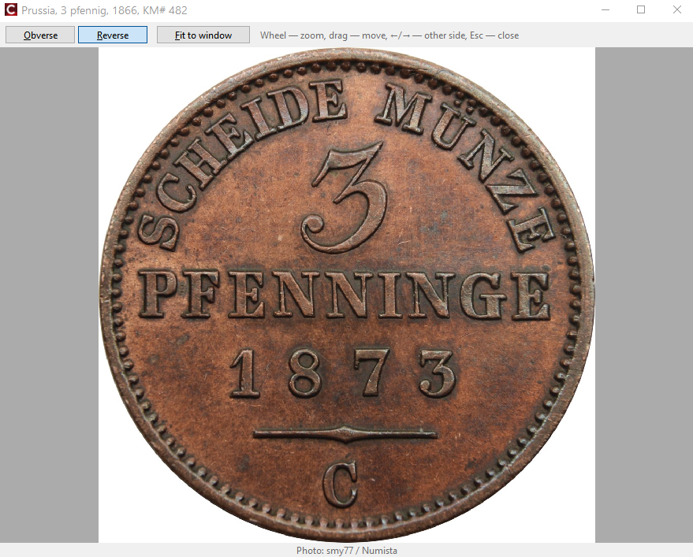

Фото

Скриншот: images/04-photo-viewer.png
Фото примірника і фото типу
- Фото примірника — ваш власний знімок вашого примірника.
- Фото типу спільне для всіх примірників монети (зазвичай зображення з каталогу Numista).
- У картці монети видно обидва поруч: ліворуч фото типу, праворуч моє фото — погане фото стертої монети можна одразу порівняти з каталогом.
- У подробицях монети показується фото примірника; без нього — фото типу з позначкою фото типу. Якщо в монети є обидва, кнопка ⇄ у куті аверсу перемикає між вашим фото й каталогом; вибір зберігається, поки ви переходите між монетами.
Додавання фото
У картці монети: File.../Файл... (JPEG, PNG, BMP, GIF, TIFF), Paste/Вставити
або перетягніть файл на рамку. Фото зменшуються до 1200 px і зберігаються як JPEG у Photos\.
Фото з Numista
Коли монету пов'язано з Numista, зображення аверсу й реверсу типу завантажуються автоматично як фото типу (зв'язок, оновлення даних каталогу). Ваше власне фото типу ніколи не замінюється. Автор зображення показується у вікні перегляду: Photo: <автор> / Numista.
Перегляд
Подвійне клацання по фото в подробицях. Якщо в монети є і ваші фото, і фото каталогу, кнопки My photo/Моє фото / Catalogue/Каталог (або ↑/↓) перемикають між ними. Коліщатко миші — масштаб, перетягування — зсув, ←/→ або Пробіл — інша сторона, 0 або Home — за розміром вікна, Esc — закрити.